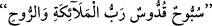

beraber Allah Teâlâ bu imtihanla onları şimdiye kadar hiç kimseye nasip olmayan böyle
bir lütuf ve ihsana mazhar ve muvaffak kılmış; böylece onların o dönemde bütün
âlemlere üstün olduklarını ortaya koymuştur. Bu olay, bizim söz ve idrakimizin ifade ve
ihata edemeyeceği nice güzellik ve sırlarla doludur.
Bazı ârifler der ki, insan evlat sevgisi üzere yaratılmıştır. İbrahim (a.s.)’ın Allah ile
olan dostluk gayreti ve muhabbet makamı bu dostun gönül bağının hakiki dosttan başka
herkesten ve her şeyden kesilmesini gerektirmiştir. Bundan dolayı hiçbir tereddüt
olmaksızın en çok sevdiği şeyi Allah yolunda feda etmek adına İbrahim (a.s.) bir
imtihan olarak oğlunu kurban etmekle memur olmuştur. Ayrıca Allah Teâlâ meleklere
İbrahim (a.s.)’ın dostu olduğunu ve onun gönlünden Mevlâ’nın sevgisinden başka bir
şey olmadığını bildirmiştir. Buna göre burada asıl maksat, İbrahim (a.s.)’ın oğlunu kesip
kurban etmesi değil; evlat sevgisinin gönülden silinmesi ve tâbii âdeti terk etmesidir.
Molla Câmî der ki: İbrahim (a.s.)’da Hak Teâlâ’nın sevgisi o derece galip idi ki, hak
yolunda babasından ve kavminden uzaklaştı. “İbrahim’in babası için af dilemesi, sadece
ona verdiği sözden dolayı idi. Ne var ki, onun Allah’ın düşmanı olduğu kendisine
malum olunca, ondan uzaklaştı. Ve yine Allah yolunda oğlunu kurban etmeye teşebbüs
etti. Yine bu kadar çok ve meşhur olan tüm malını Allah yolunda feda etti.
Haberde şöyle gelmiştir: İbrahim (a.s.)’ın 5000 koyun sürüsü vardı. İbrahim (a.s.)’ın
Allah ile olan bu yüce dostluğu ile beraber malının bu kadar çokluğu meleklere tuhaf
geldi. İbrahim (a.s.) bir gün koyunlarıyla meraya çıktı. Çoban köpeklerinin de altın
tasmaları vardı. İnsan suretinde bir melek bir vâdinin üst kısmından çıka geldi ve :
Yani “Bütün meleklerin ve Cebrail’in Rabbi olan Allah’ı tesbih ve takdis ederim”
diye tesbih etti. Bu tesbih meleklere mahsus bir tesbih idi. İbrahim (a.s.) daha önce bunu
hiç duymamıştı. Halil İbrahim (a.s.) sevgilisi olan Allah Teâlâ’nın tesbihini işitince çok
hoşuna gitti. Ve ona kavuşma arzusu bir kat daha arttı ve “Ey İnsan! Rabbimin zikrini bir
daha tekrar et; malımın yarısı senin olsun” dedi. Adam, aynı tesbihi bir daha tekrar etti.
Bu sefer İbrahim (a.s.) adama: “Benim yaratıcım olan rabbimin tesbihini bir daha tekrar
et; şu gördüğün koyunlar, çobanlar hizmetçiler bütün malım senin olsun” dedi. İbrahim
(a.s.)’ın 5000 hizmetçi uşağı vardı. Bu durum karşısında melekler insaf ettiler. Âdem
(a.s.)’ın hilafetini teslim ettikleri gibi, onun (a.s.) da dostluğunu kabul ettiler. Bu durum,
İbrahim (a.s.)’ın Âdem (a.s.)’dan sonra ikinci baba oluşunun sırlarındandır.
Fakir (Bursevî) der ki: Şeyhim (Osman Fazlî-i İlâhî) (k.s.)’den şöyle dediğini
işittim: İbrahim (a.s.) ef’âl (fiiller), sıfât (sıfatlar) ve Zât’a dair tevhidin bütün
mertebelerini gerçekleştirmiştir. Zira Allah ile kul arasındaki küllî perdeler üçtür:
Bunlar, mal, evlat ve beden (can) perdeleridir. İşte ef’âl tevhidi maldan, sıfât tevhidi
evlattan, zât tevhidi ise beden ve candan fâni olup feragat etmekle hâsıl olur. İşte bütün
bu perde ve engeller, sırasıyla tevhitteki makamlara mukabildirler. Sonuçta Allah Teâlâ